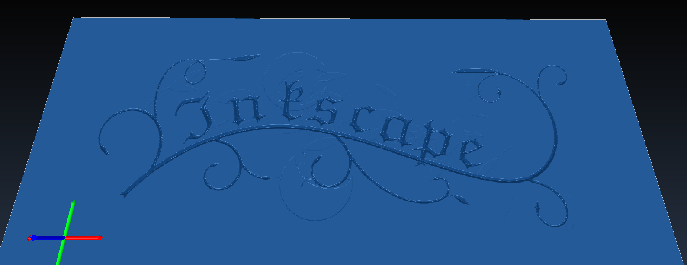

CAM Vcarve
 CAM Vcarve
CAM Vcarve
- Menu location
-
- Workbenches
- Default shortcut
-
None
- Introduced in version
-
0.19
- See also
Description
The  CAM Vcarve command is primarily for center-line engraving a
CAM Vcarve command is primarily for center-line engraving a  Draft ShapeString onto a part. However, it may be useful for other kinds of 2D. The command tooltip reads "Creates a medial line engraving toolpath".
Draft ShapeString onto a part. However, it may be useful for other kinds of 2D. The command tooltip reads "Creates a medial line engraving toolpath".
Unlike engraving which follows the lines in the shapestring, V-carving uses a V-shaped cutter and attempts to clear the area by moving the cutter down the center of the region and varying the depth of cut. Since a v-cutter radius varies with the depth, the width of cut varies as well. The result is a more natural looking cut, particularly for serif fonts.
The Tool Controller must use a Tool Bit with the v-bit Tool Shape (properties Diameter, Tip Diameter and Cutting Edge Angle below 180°), for example the shipped 30/45/60/90degree_Vbit. With any other Tool Bit the task panel reports "This operation requires a tool controller with a v-bit tool" and no Toolpath is generated.



The images above predate the 26.3 virtual edge backtracking.
The V-carve algorithm calculates a Toolpath down the center-line of a region using a Voronoi diagram. This center-line is the path the tool will follow in the XY-plane. It next calculates a 'maximum inscribed circle' along the medial line. This is the largest circle that can be drawn at that point and remain entirely inside the clearing area. Using the circle radius and the tip angle of the cutter, the depth of cut is calculated.
introduced in 26.3: Routing can use virtual edge backtracking. If the next cutting start point is reachable through an already-carved path, or through an edge that will be carved next, the operation can follow that edge instead of a retract, rapid move and plunge.
Usage
Prepare the shapes to engrave
-
 Draft ShapeStrings are usable out of the box
Draft ShapeStrings are usable out of the box -
SVG files require some massaging, both in the editor and in the
 Draft Workbench:
Draft Workbench:-
In the editor (e.g. Inkscape): make sure the file only contains paths and that the paths are ungrouped; make sure there are no self-intersecting paths, (in Inkscape) use Path → Simplify and union to join paths that overlap.
-
Switch to the
Draft Workbench in workbench dropdown list -
Import the SVG using
-
The result should look similar to this:
::

-
Above: Results of importing 'SVG as geometry'
::
;;
Paths with holes (letters, the vine in the image above) are imported as 2 separate paths (named along the lines of Path905 and Path905001 in the Tree View), one of them is the hole and the other one is the outline; we’ll deal with this in the next step
-
-
In order to get the 2D faces, CAM Vcarve needs:
-
For paths without holes:
-
Select the path
-
Choose Modification
-
Followed by Modification
-
-
For paths with holes:
-
Select the outer path, then the inner path
-
Choose Modification twice
:: Some paths will behave differently, so you may need to play with
 Upgrade and Downgrade until you get something named:
Upgrade and Downgrade until you get something named: Face<number>
The end result should look like this:

-
-
-
Create the Vcarve operation
-
Switch to the
 CAM Workbench in the workbench dropdown menu
CAM Workbench in the workbench dropdown menu -
Add a job, use the objects named
Face<number>(or the ShapeString) as a base, add a Tool Controller with a v-bit Tool Bit, set feeds, speeds, etc. -
Create the operation:
-
Press the
 Vcarve button in the Engraving Operations group of the New Operations toolbar, or select from the top menu. This opens the configuration panel.
Vcarve button in the Engraving Operations group of the New Operations toolbar, or select from the top menu. This opens the configuration panel. -
Add the ShapeString(s), Face objects or individual faces of Models to Base Geometry; every face is processed separately. If nothing is selected, all Sketcher and Part 2D objects of the Job are used.
-
Press Apply and inspect the generated Toolpath; if necessary, adjust operation parameters (raising Filter colinear lines removes more short segments from the medial line)
-
Press OK to finish
-
Options
The Operation section of the task panel contains:
-
Discretization Deflection: This value is used in discretizing arcs into segments. Smaller values will result in larger G-code. Larger values may cause unwanted segments in the medial line path.
-
Filter colinear lines: Sets how aggressively colinear segments are filtered from the voronoi diagram. Valid values are 0 - 90 degrees (larger numbers filter more). Default = 10.
-
Finishing pass: After carving, travel again the path to remove artifacts and imperfections. Enables Finishing pass Z offset: Endmill offset for the finishing pass run. Use small value like -0.2 mm to help clean 'fuzzy skin' or other artefacts.
-
Optimize movements: Optimize path to avoid raising endmill when moving to adjacent edges. May result in sub-millimeter inaccuracies.
Other sections: Base Geometry (Import, Add, Remove, Clear), Heights (Clearance, Retract, Start, Step down, Final), Tool Controller (Tool controller, Coolant).
Properties
Data
-
Placement: -
-
Label: -
-
Clearance Height: The height needed to clear clamps and obstructions.
-
Final Depth: Final Depth of Tool- lowest value in Z; default is the bottom of the Stock. The actual depth at each point is the smaller of the depth derived from the maximum inscribed circle and Final Depth.
-
Safe Height: Rapid Safety Height between locations.
-
Start Depth: Starting Depth of Tool- first cut depth in Z; default is the top of the Job Models.
-
Step Down (introduced in 26.3: fixed): Incremental Step Down of Tool; when non-zero the medial lines are cut in successive layers, limited to the maximum usable depth of each face.
-
Op Final Depth: Holds the calculated value for the FinalDepth. Read-only.
-
Op Start Depth: Holds the calculated value for the StartDepth. Read-only.
-
Op Stock ZMax: Holds the max Z value of Stock. Read-only.
-
Op Stock ZMin: Holds the min Z value of Stock. Read-only.
-
Op Tool Diameter: Holds the diameter of the tool. Read-only.
-
Active: Make False, to prevent operation from generating code.
-
Base: The base geometry for this operation.
-
Colinear: Cutoff for removing colinear segments (degrees). Default: 10.0.
-
Comment: An optional comment for this Operation.
-
Coolant Mode: Coolant mode for this operation (
None,Flood,Mist). -
Cycle Time: Operations Cycle Time Estimation (read-only).
-
Discretize: The deflection value for discretizing arcs. Default: 0.25.
-
Finishing Pass: Add finishing pass. Default: false.
-
Finishing Pass Z Offset: Finishing pass Z offset. Default: 0.
-
Optimize Movements: Optimize movements. Default: false.
-
Tolerance (introduced in 26.3): Vcarve Tolerance; default is the CAM geometry tolerance preference. Used to decide when the cutter can follow an already-carved edge instead of retracting (virtual edge backtracking).
-
Tool Controller: The tool controller that will be used to calculate the path.
-
User Label: User Assigned Label.
-
Workplane: The orientation of the tool for this operation. Default is (0, 0, 1) for standard Z-up milling. introduced in 26.3
Notes
-
Whole objects can be added to Base Geometry only when they are 2D objects (Draft ShapeString, Draft or Part 2D faces); for other Models select individual faces.
-
Optimize Movements lets the cutter travel back along already-carved edges at feed rate instead of retracting, rapid-moving and plunging. Finishing Pass repeats the whole Toolpath once more, offset in Z by Finishing Pass Z Offset, to clean fuzz left by the first pass.
Scripting
See also: FreeCAD Scripting Basics.
Example:
import FreeCAD
import Path.Op.Vcarve as PathVcarve
job = FreeCAD.ActiveDocument.getObject('Job')
op = PathVcarve.Create('Vcarve', parentJob=job)
op.BaseShapes = [FreeCAD.ActiveDocument.getObject('ShapeString')]
op.Discretize = 0.25
op.Colinear = 10
op.OptimizeMovements = True
FreeCAD.ActiveDocument.recompute()